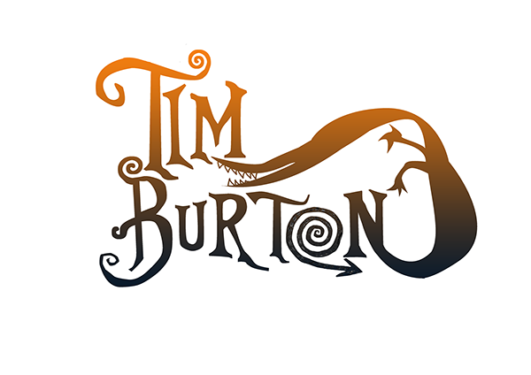
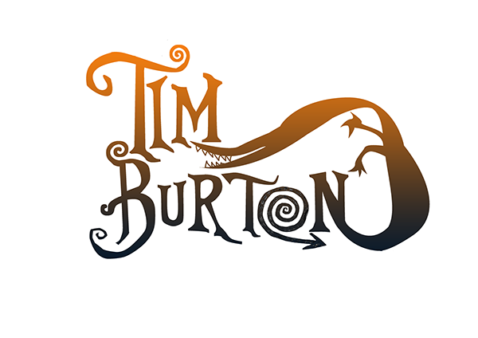

Director de cine
 

Biografia
Timothy Walter Burton nació el 25 de agosto de 1958 en la ciudad californiana de Burbank. Es el primero de los dos hijos de Bill y Jean Burton. La mayor parte de su infancia estuvo caracterizada por la representación, junto a su hermano, de parodias relacionadas con delitos sangrientos, considerándose él mismo introvertido —una de sus anécdotas personales es la de haber simulado un asesinato para asustar a los vecinos, hasta tal punto que uno de ellos llamó a la policía—. Por ello recibió el alias «Axe Wound» (herida de hacha). Otro de sus pasatiempos favoritos era asustar a los hijos de sus vecinos alegando la llegada de criaturas extraterrestres que invadirían la Tierra. Uno de sus principales entretenimientos fue el diseño, aspecto en el que demostró tener talento tras concursar y ganar un concurso de trazos que serían usados en los camiones urbanos de su ciudad natal.

Filmografia

Familia
Hijo de Bill Burton, exjugador de béisbol de ligas menores que más tarde trabajaría en el Parque Burbank, y de Jean Erickson, dueña de una tienda de regalos. Tuvo un hermano.
Siendo un niño ya realizaba cortometrajes en el patio trasero de su casa en la calle Evergreen utilizando técnicas de animación con películas de 8 mm sin sonido (una de ellas fue titulada la Isla del Doctor Agor, que hizo cuando tenía 13 años). En el año 2001 el director comenzo un noviazgo con Helena Bonham Carter y tuvieron dos hijos: Billy Raymond (nacido en el año 2003) y Nell (nacida en el 2007)
Por otra parte su padre, Bill (un antiguo jugador de ligas menores de béisbol), murió en octubre de 2000 durante el rodaje de El planeta de los simios, y su madre, Jean, falleció en marzo de 2002. Vanity Fair publicó la lista de los Top 40 celebridades de Hollywood con más ingresos a lo largo de 2010. Burton fue clasificado no. 6 en la lista, ganó un estimado 53 millones por sus películas.